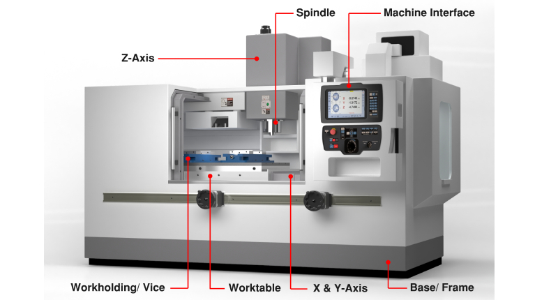
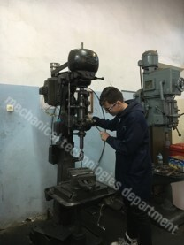

There are many branches in the Mechanical Technologies Department. This Section focuses on
Computer Numerical Control(CNC)
DALIN AMACI
Yaratıcı fikirlere sahip, tasarlayan, üreten, üniversal ve CNC tezgahları
kullanabilen,
iş güvenliği ilkelerini benimseyen, CAD CAM programlarında
yetkin, Ar-Ge birimlerinin aranan
elemanlarını yetiştirmek amaçlanmaktadır.
DERSLER
Temel İmalat İşlemleri
İmalat İşlemleri
Bilgisayar Destekli Çizim
Teknik Resim
Makine Resmi
Bilgi Destekli Tasarım (CAD)
Bilgi Destekli Üretim(CNC)
Yenilikçi Üretim Yöntemleri
Cam programı kullanıcısı
Bilgisayarlı Makine İmalatı Dalı Atölyeleri
Bilgisayarlı Makine İmalatı Dalı Atölye 1
Bilgisayarlı Makine İmalatı Dalı Atölye 2
Bilgisayarlı Makine İmalatı Dalı Atölye 3
CNC Atölyesi
Bilgisayarlı Makine İmalatı Dalı Laboratuvarları
Cad Cam Laboratuvarı
Hidrolik Pnömatik Laboratuvarı
Bölümde Elde Edilen Kazanımlar
Yapılacak olan üretim ile ilgili olarak ortaya koyacağı-üreteceği ürünün tasarımını ve çizimini yapar,
Verilen resme göre kalıp elemanlarını imal eder.
Komple resme göre, kalıp montajını yapar.
Üniversal tezgahlarla bir üretim prosesini tamamlayabilir.
Bilgisayar kontrollü makinelerde kullanılan programlar ve program kodları hakkında gerekli
güncellemeleri ve yenilemeleri yapar,
CAD programları bilir ve kullanır
CAM programları bilir ve kullanır
CNC torna ve CNC frezeyi kullanmayı bilir.
CNC torna ve CNC frezeye ait takımların kullanımı ve kullanım yerleri hakkında bilgi sahibi olur ve
kullanır.
Bilgisayar kontrollü makinelerden gelecek olan uyarı mesajlarını anlar ve tezgâhın sorunlarını giderir,
Tezgâhın basit bakım ve onarımlarını yapar,
Ölçü ve kontrol aletlerini bilir ve kullanır,
Çalışılan materyale bağlı olarak tasarım işlemi yapar, gerekli görürse tasarımı yeniden yapar
Kullanılan malzemenin özellikleri hakkında gerekli bilgilere sahip olur ve malzeme özellik denemeleri
yapar.
BİLGİSAYARLI MAKİNE İMALATI DALINDAN MEZUN OLDUĞUNDA
Üniversal tezgah operatörü
CNC tezgah operatörü
İş güvenliği elemanı
2 boyutlu programlarda tasarımcı
3 boyutlu programlarda tasarımcı
Metalurji (malzeme bilimi)
Kalıp tasarımı
Kalıp üretimi
CAM programı kullanıcısı

